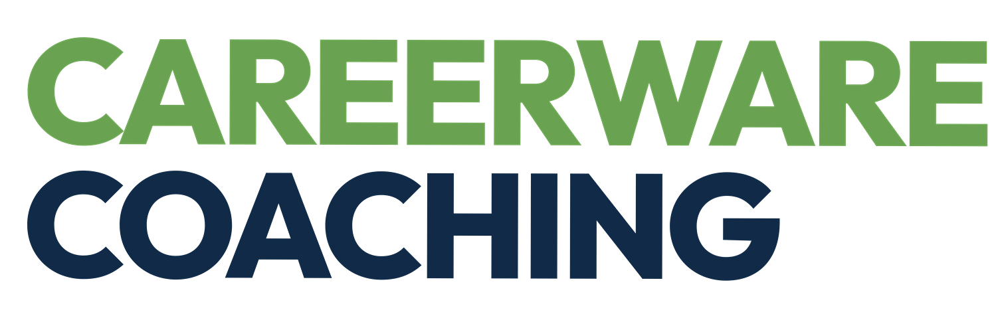

Export
Import
CIRCLe : Your Tech Leadership Maturity Profile
Maturity Balance Wheel
Wheel Balance & Key Metrics
5.0
Default initial ratings set to 5 (light blue). Select ratings below to build your profile.
Reset Ratings to Default